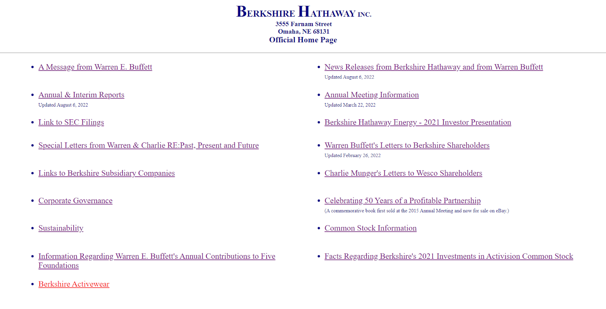
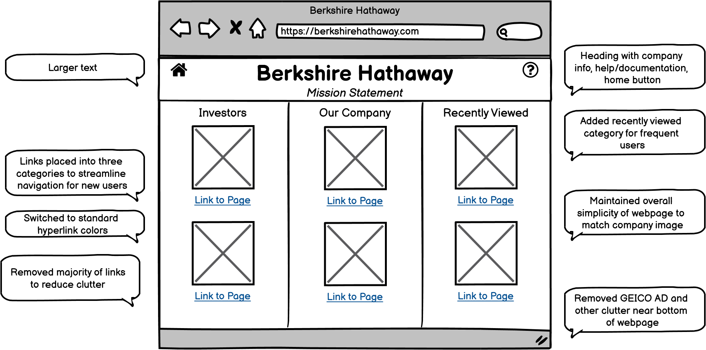
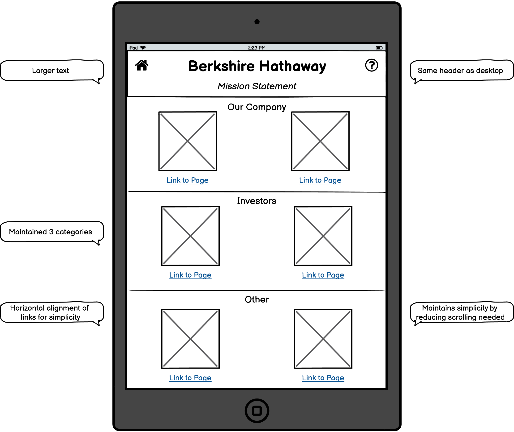
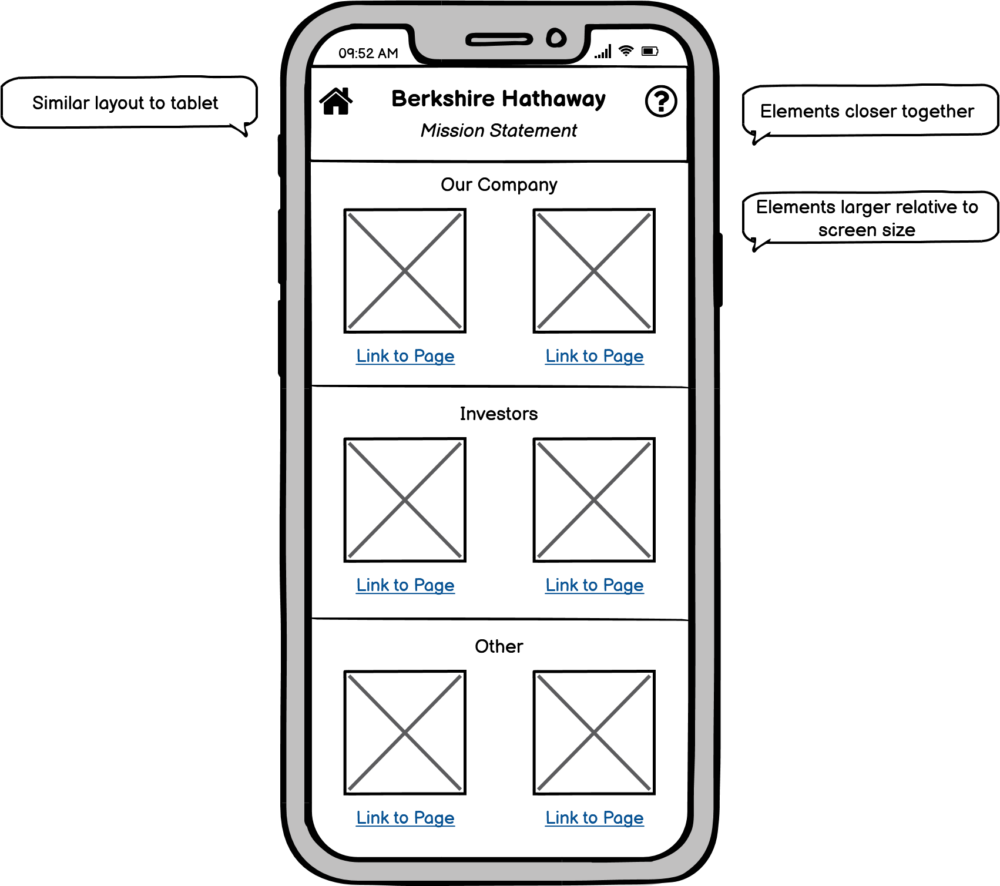
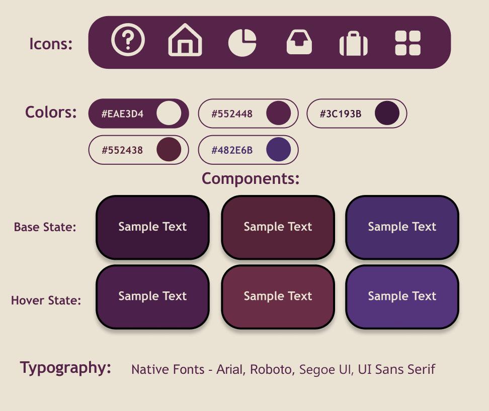
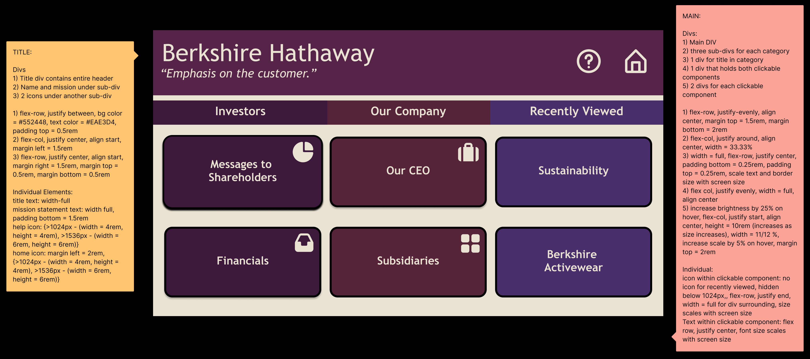
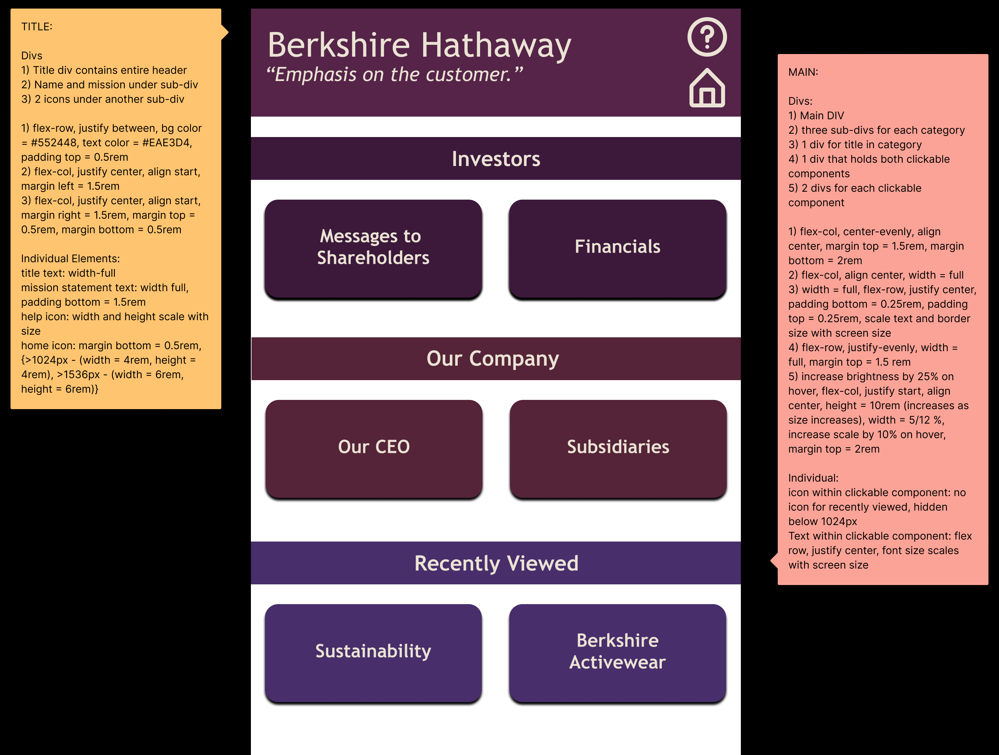
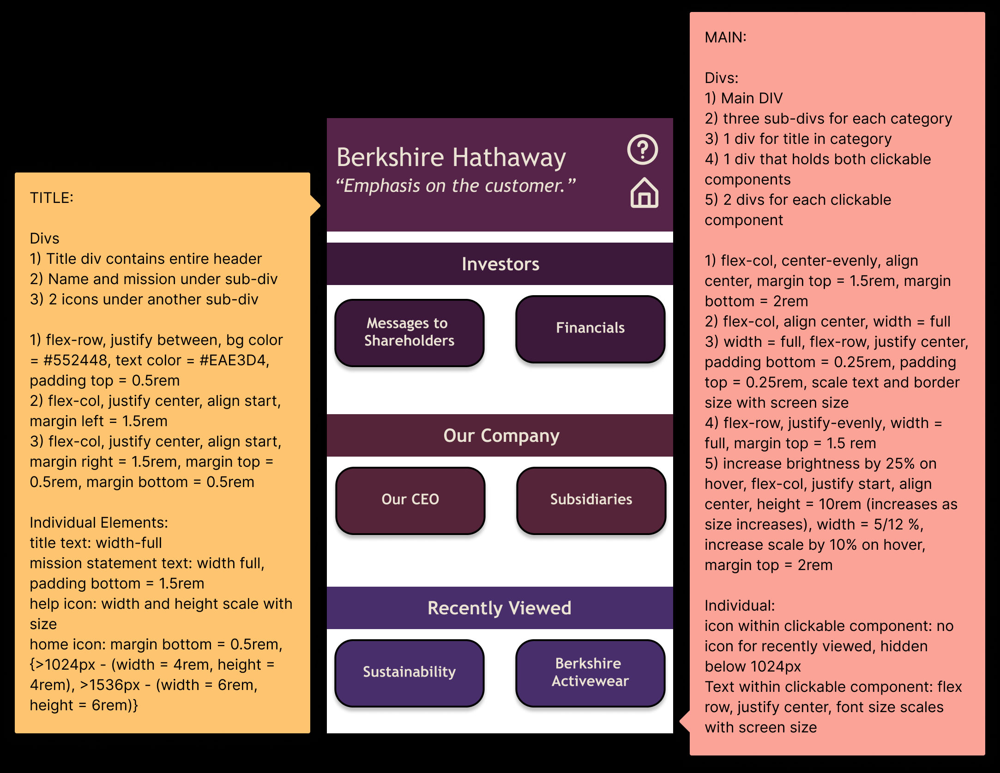

WHAT IS THIS PROJECT?
- How can we identify usability problems on a website, and what are the steps required to fix these problems?
- How can we craft a more responsive, intuitive website that aims to fix the problems found?
This project aims to answer these questions and many more.
BERKSHIRE HATHAWAY
Berkshire Hathaway, one of the most expensive conglomerates in the world,
has an extremely simple yet surprisingly confusing website.

Quick! You need information about the company.
Let's look at some issues you'll run into.
Usability Problems:
- No obvious way to undo clicking a link (no home button)
- No mobile specific layout
- Clicking link replaces current page
- Hyperlink base and interaction colors are backwards
Learnability Problems:
- No pattern/structure to ordering of links
- Small text easy to ignore
- No help/documentation. All feedback must be mailed
- Random GEICO AD confusing for new users
- Difficult to learn link structure because links don't open new tab
Memorability Problems:
- Emphasizes recall over recognition
- No color indicators or categorization to help recognition
Accessibility Problems (WAVE):
- Small text
- No heading structure
- Website language not identified
- Links point to PDF documents
Oops! You took too long to find the information needed.
You just lost all of your life savings :(
EARLY PROTOTYPES
Let's do Warren Buffett (and potential investors) a favor and fix his website :)
Let's look at my thought process before designing.
My Thought Process:
- Berkshire Hathaway prides itself in its simplicity.
- How can we create a better interface while maintaining their values?
- Create a modern interface to show company's commitment to innovation
- Remove excessive links from main page.
- Frequent and new investors need quick access to information
- Create categories to help with recognition
Desktop:

Tablet:

Mobile:

Problems Addressed:
- Added a help button to top of page
- Added a home button to allow users to return to home page
- Created three categories based on the theme of the links
- Added "Recently Viewed" category for quick access for frequent users
- Maintained overall simplicity of website
- Removed confusing clutter from main page
HI-FI PROTOTYPES
My Thought Process:
- Color scheme matches Berkshire Hathaway palette
- Buttons would POP on hover to increase learnability
- Use standard fonts to keep readability consistent among operating systems
- Keep page mobile and tablet friendly for "on the go" investors
Let's start looking at the details, starting with a visual style guide!
Visual Style Guide:

Let's look at some HI-FI designs created using Figma!
Desktop:

Tablet:

Mobile:

Emphasizing Visual Hierarchy:
- Categories are unique colors
- Font scales down as you move from headings to sub-headings
- Between the 3 layouts, items in the same categories are always aligned together